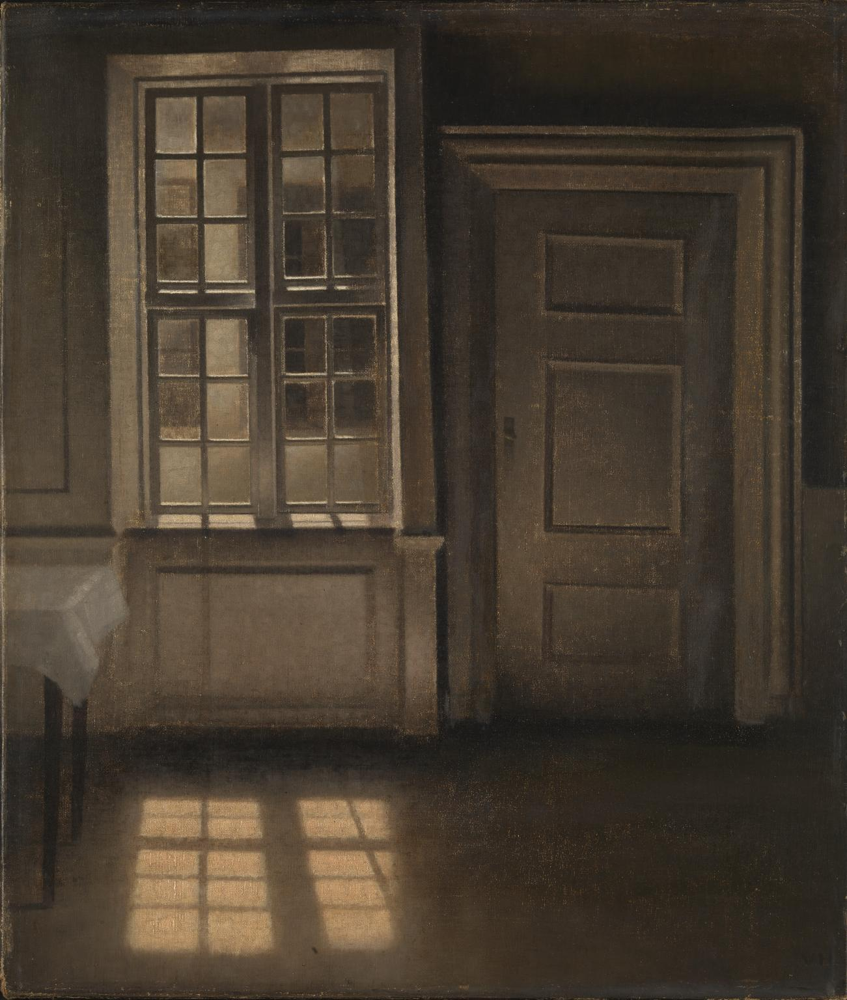

2 June 2026
the slow road back

dear you,
i have been standing in the doorway again.
not leaving, not arriving.
just watching the light change
on the kitchen floor,
trying to remember what i came in for.
i am trying to catch myself earlier now.
before the spiral finds its speed.
to notice the thought and not become it.
you sleep easily.
i have noticed this about you,
the way you close your eyes and simply go.
i lie beside you and practice.
outside, a tree is doing whatever trees do at night.
i am not afraid of the dark exactly.
i am afraid of what i do in it;
the quiet industry of worry,
building something out of nothing, again.
so i name them, one by one,
the way you’d inventory a room.
this is a feeling. this is an old one.
i have survived it before.
i set it on the windowsill and leave it there to cool.
some nights it works.
i find the slow road back to my own breathing,
and sleep arrives eventually, unhurried,
like a letter you’d forgotten you were waiting for.
yours, kate
(artwork: interior, sunlight on the floor by vilhelm hammershoi)